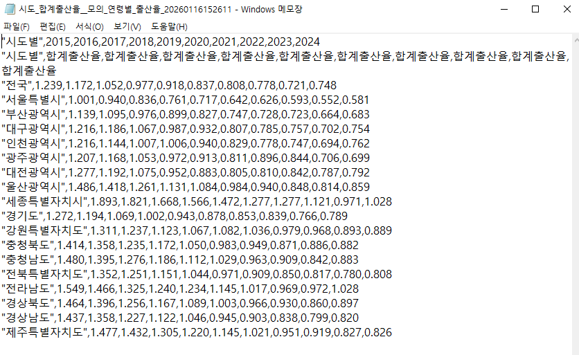
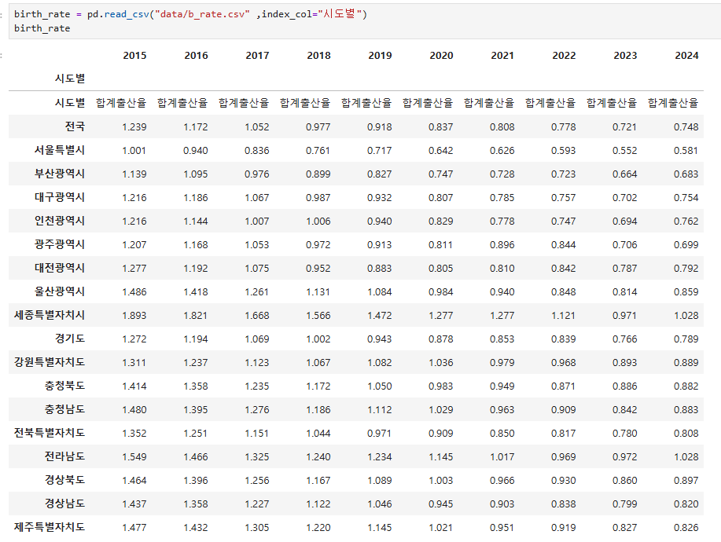

데이터 전처리 과정 - 출산률(%)
CSV 확인 → 파이썬으로 불러오기/인덱스 지정 → 불필요 행 제거(서울 및 6개 광역시만 유지)
📂
모두 펼치기
📁
모두 접기
1. 활용할 데이터 파악
(1) 활용할 데이터 CSV 파일로 다운 받아 확인
수집한 데이터의 컬럼/결측치/불필요한 행 여부를 먼저 확인합니다.

2. 파이썬으로 CSV 불러오기 및 인덱스 지정
(2) 파이썬으로 CSV 파일 불러오기 및 인덱스 지정
분석 단위(시도별)를 인덱스로 설정하여 이후 필터링/시각화가 쉬워지도록 합니다.

3. 불필요한 행과 데이터 제거
(3) 불필요한 행과 데이터 제거
: 서울 및 6개 광역시 행만 가져온 후 기존 변수에 재저장
분석 대상(서울+6개 광역시)만 남기기 위해 나머지 시도 행을 제거합니다.